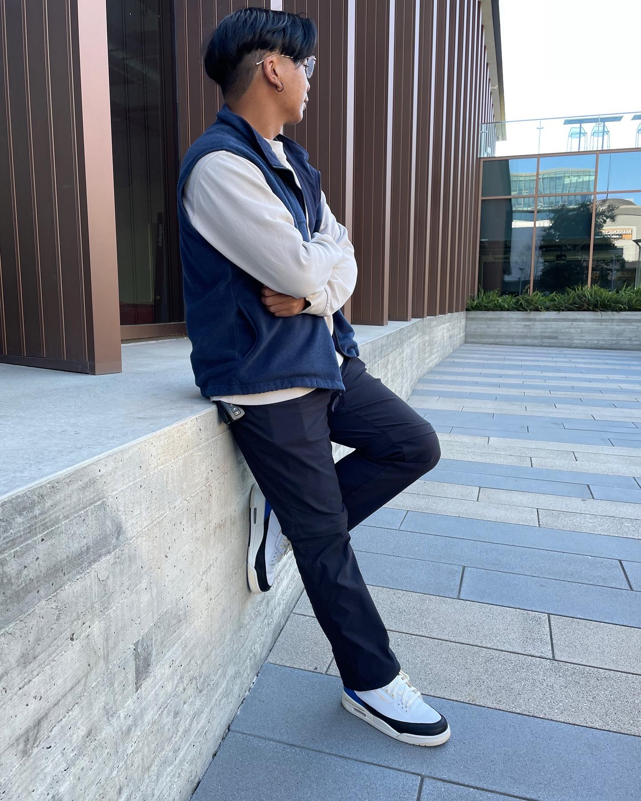

About
I’m a graphic designer focused on building clear, intentional visual systems across branding, print, and digital design.
My work centers on typography, structure, and composition— using design as a tool to communicate ideas with clarity and purpose. I’m especially interested in how visual systems create consistency across different mediums and experiences.
Through both conceptual and applied projects, I explore how design can balance aesthetics and function while remaining thoughtful, minimal, and effective.